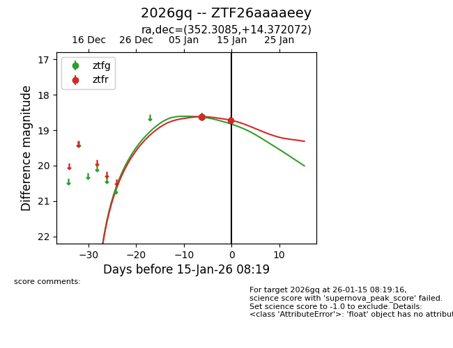
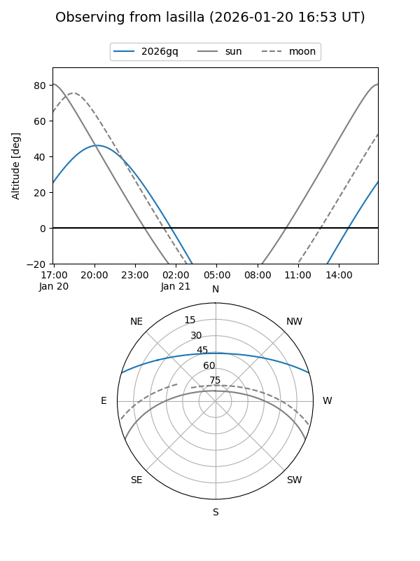
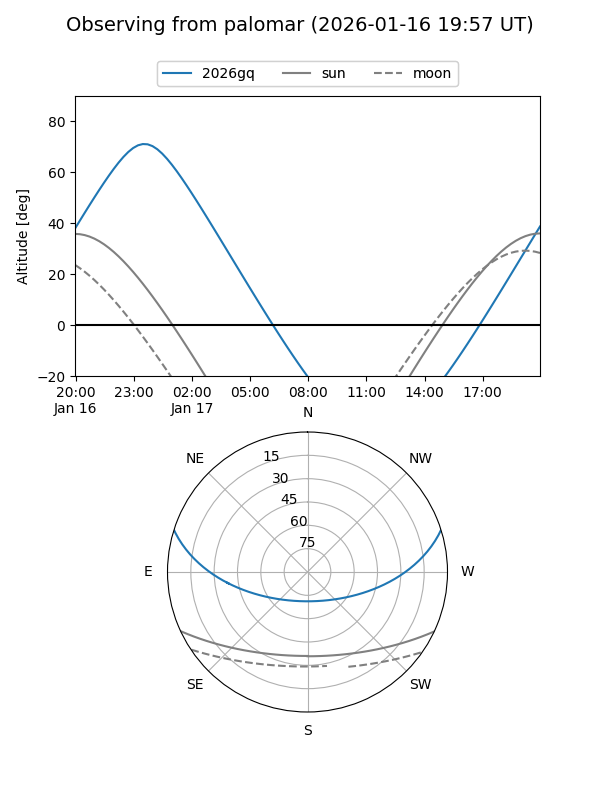
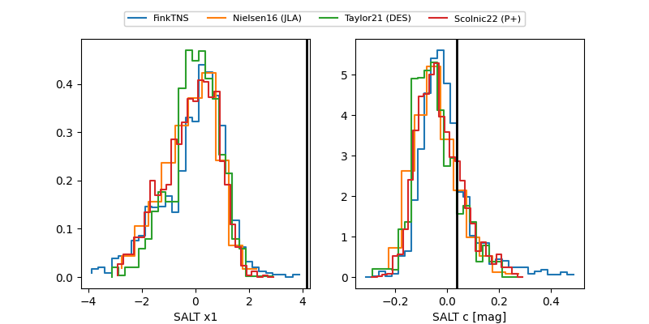

2026gq
Target 2026gq at 2026-01-09 06:01
Aliases and brokers:
FINK:
Lasair:
ALeRCE:
TNS:
YSE:
alt names
ZTF26aaaaeey (ztf,fink_ztf)
2026gq (tns,yse)
Coordinates:
equatorial (ra, dec) = 352.3086,+14.37205
equatorial (HMS+DMS) = 23:29:14.06,+14:22:19.39
galactic (l, b) = (94.7439,-43.95447)
Flags:
Photometry:
last ztfg=18.63
1 ztfg detections
Lightcurve

Visibility


Additional plots
